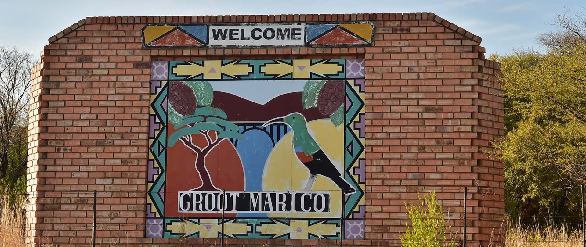
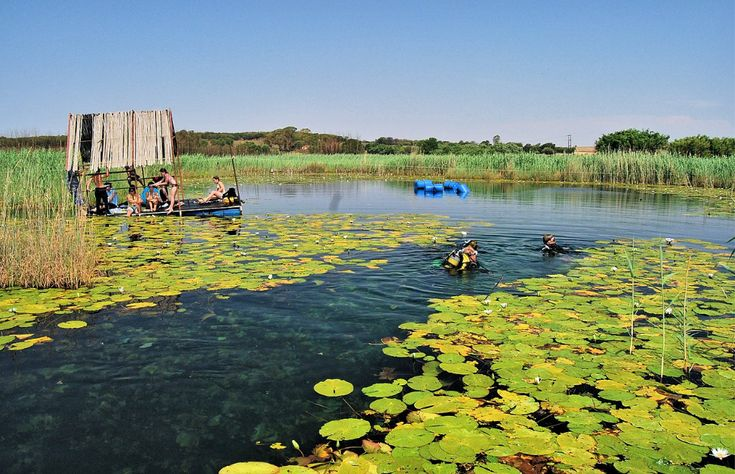

Groot Marico
41 Reviews
Location: North West Province, South Africa



Rustic Charm and Heritage
Groot Marico is a quaint town known for its literary heritage, stunning nature, and traditional South African experiences. It offers visitors a mix of cultural encounters, river activities, and rustic tranquility.
Entry / Tour Costs
Guided Tours - R150 / person
Heritage Site Entry - R50 / person
- Nature Experiences Enjoy the unspoiled bushveld, Marico River, and peaceful countryside trails.
- Cultural Heritage Learn about the life of author Herman Charles Bosman and explore local traditions.
- River Activities Swim, canoe, or relax by the clean waters of the Marico River.
- Farm Stays & Lodges Stay in cozy lodges or local farms and experience authentic hospitality.
Groot Marico, nestled in the heart of the North West, is one of South Africa’s hidden gems. Famed for its beautiful environment, literary significance, and traditional Mampoer distilling, it offers a deeply local and enriching experience. Whether you're there to relax, learn, or explore, Groot Marico invites you to slow down and enjoy its timeless charm.
Add your comment here
Comments
Sakhile Shabalala
Its's great!